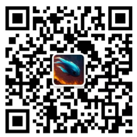

项目简介
DeepSec是一个公益性质的开源项目，致力于构建高质量的中文网络安全运营语料库，提升大模型在安全运营场景中的表现。本项目由中国网络安全领域资深从业人员发起，面向整个安全社区开放。
关于项目
项目背景
当前中文网络安全运营领域缺乏高质量的专业语料库，这严重制约了大模型在安全运营场景中的应用和发展。
项目目标
构建高质量的中文网络安全运营语料库，为大模型提供专业、丰富的训练数据，推动安全运营领域的发展。 涉及到：真实网络安全事件数据，网络安全运营实战交互记录，组织内安全沟通语言等等。
公益性质
去厂商化，任何人可以参与。项目完全开源，所有成果免费开放，鼓励社区参与贡献，共同推动行业发展。
项目团队
项目发起人
DeepSec项目由来自中国网络安全领域的资深从业者发起，发起团队成员均拥有十年以上安全领域经验，来自：
- 知名安全公司技术专家
- 企业安全一线工程师
- 行业资深安全顾问
运营机制
轮值委员会
采用月度轮值制度，确保项目持续推进和多元化发展。每位委员将轮流负责项目决策和协调工作。
双周工作会议
每两周召开一次工作会议，同步项目进展，解决技术难题，规划下一阶段工作重点。
项目规划
第一个月
成立工作组，确定工作机制
完成初始语料收集和整理
第二个月
完成首次安全运营大模型训练
第三个月
完成首次成果展示
未来规划
持续优化和改进，扩大语料库规模，提升模型效果
参与方式
